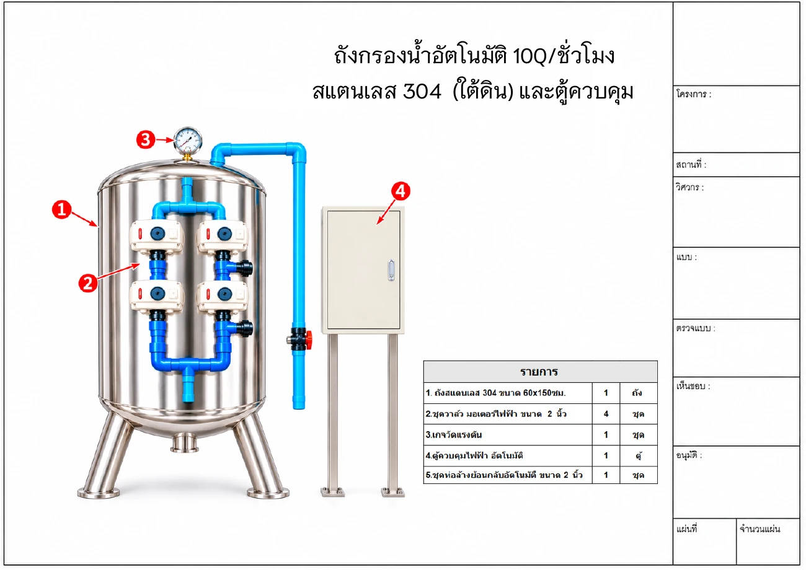
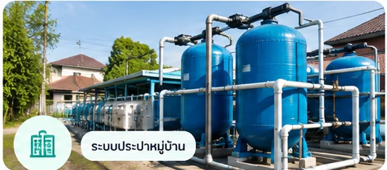

เครื่องกรองน้ำประปาและโรงกรองน้ำประปาหมู่บ้าน
เครื่องกรองน้ำประปา Sunnex สำหรับปรับปรุงน้ำอุปโภคในหมู่บ้าน ชุมชน โรงเรียน และหน่วยงานท้องถิ่น เลือกได้ทั้ง เครื่องกรองน้ำประปาผิวดิน เครื่องกรองน้ำประปาบาดาล และ โรงกรองน้ำประปา พร้อมระบบควบคุมอัตโนมัติและคำแนะนำการเชื่อมต่อกับระบบเดิม เพื่อเลือกชุดกรองให้ตรงกับแหล่งน้ำ ปริมาณใช้น้ำ และผลตรวจคุณภาพน้ำจริง
เลือกเครื่องกรองน้ำประปาและถังกรองน้ำ

31โรงกรองน้ำประปาผิวดิน 24Q
ดูรายละเอียด
41ระบบถังกรองน้ำประปาผิวดิน 10Q / 15Q / 20Q / 30Q
ดูรายละเอียด
42ระบบถังกรองน้ำประปาบาดาล 10Q / 15Q / 20Q / 30Q
ดูรายละเอียดถังกรองน้ำประปากับโรงกรองน้ำประปา เลือกต่างกันอย่างไร?
ชุดถังกรองน้ำประปา
เหมาะกับการเพิ่มหรือปรับปรุงขั้นตอนกรองในระบบเดิม เลือกรุ่นผิวดินหรือบาดาล แล้วตรวจความพร้อมของปั๊ม ถังพัก ระบบไฟ และท่อก่อนติดตั้ง
โรงกรองน้ำประปาหมู่บ้าน
เป็นชุดผลิตและปรับปรุงคุณภาพน้ำที่มีองค์ประกอบมากกว่าตัวถังกรอง ขอบเขตถังพัก ชุดแยกตะกอน ระบบควบคุม และอุปกรณ์ร่วม ให้ดูรายละเอียดของแต่ละรุ่น
หากมีประปาเดิมและต้องการแก้ปัญหาน้ำขุ่น อาจเริ่มจากประเมินชุดถังกรองและขั้นตอนเตรียมน้ำ หากกำลังวางระบบใหม่หรือเพิ่มกำลังผลิต ควรเปรียบเทียบโรงกรองน้ำร่วมกับโครงสร้างและอุปกรณ์ที่มีอยู่ เพื่อวางงบประมาณทั้งระบบได้ครบถ้วน
เปรียบเทียบเครื่องกรองน้ำประปาในหมวด
| สินค้า | แหล่งน้ำ | ขนาด / กำลังผลิตที่ระบุ | องค์ประกอบและจุดพิจารณา |
|---|---|---|---|
| โรงกรองน้ำประปาผิวดิน 12Q | น้ำผิวดิน | 12,000 ลิตร/ชั่วโมง 12 คิว/ชั่วโมง | ชุดตามแบบมีเครื่องแยกตะกอน ถังพัก ถังกรองสแตนเลส 304 ชุดควบคุม และระบบโอโซน พร้อมแนวทางไฟฟ้าและโซลาร์ไฮบริด |
| โรงกรองน้ำประปาผิวดิน 24Q | น้ำผิวดิน | 24,000 ลิตร/ชั่วโมง 24 คิว/ชั่วโมง | สำหรับประเมินโครงการที่ต้องการกำลังผลิตมากขึ้น มีระบบล้างอัตโนมัติ รายการอุปกรณ์และงานประกอบให้ยึดสเปกชุด 24Q |
| ถังกรองน้ำประปาผิวดิน | แม่น้ำ คลอง อ่างเก็บน้ำ | ขนาด 10Q / 15Q / 20Q / 30Q ชุด 10Q: 10,000 ลิตร/ชั่วโมง | ชุด 10Q มีถังกรองสแตนเลสและชุดกรองไมโคร วาล์วไฟฟ้า/ท่อ 2 นิ้ว และชุดควบคุมล้างอัตโนมัติ 220 โวลต์ |
| ถังกรองน้ำประปาบาดาล | น้ำบาดาล / น้ำใต้ดิน | ขนาด 10Q / 15Q / 20Q / 30Q ชุดถังกรอง 10Q: 10,000 ลิตร/ชั่วโมง | เลือกแบบทั่วไป รุ่นน้ำมีหินปูน หรือ WFG304-10 พร้อมชุดลดค่าน้ำกร่อย ตามผลตรวจน้ำและสเปกของชุด |
หน่วยคิวในตารางนี้คือปริมาตรลูกบาศก์เมตรต่อชั่วโมงสำหรับชุดกรองน้ำประปาที่ระบุ ไม่ใช่ลิตรต่อวันแบบเครื่องกรองน้ำดื่ม RO สำหรับชุดลดน้ำกร่อย ต้องดูอัตราน้ำผลิตหลังเมมเบรนแยกจากกำลังของถังกรอง
เลือกเครื่องกรองน้ำจากแหล่งน้ำและปัญหาที่พบ

เครื่องกรองน้ำประปาผิวดิน
เหมาะกับการประเมินน้ำดิบจากแม่น้ำ คลอง และอ่างเก็บน้ำ ซึ่งอาจมีความขุ่นหรือตะกอนเปลี่ยนตามฤดูกาล ชุด 10Q มีถังกรองสแตนเลสร่วมกับชุดกรองไมโครและระบบล้างอัตโนมัติ
ดูถังกรองน้ำประปาผิวดิน →
เครื่องกรองน้ำประปาบาดาล
ประปาบาดาลแต่ละบ่ออาจพบเหล็ก แมงกานีส ความกระด้าง หรือความกร่อยต่างกัน ควรใช้ผลตรวจเพื่อเลือกรูปแบบชุดกรองและกระบวนการเตรียมน้ำให้เหมาะสม
ดูถังกรองน้ำบาดาลทั้ง 3 แบบ →ระบบกรองน้ำบาดาลมี 3 รูปแบบให้ประเมิน
แบบทั่วไป
ชุดถังกรองอัตโนมัติสำหรับปรับปรุงน้ำอุปโภค จัดสารกรองตามคุณลักษณะสินค้าและคุณภาพน้ำ เหมาะกับการประเมินปัญหาตะกอน สีสนิม และกลิ่น
รุ่นกรองน้ำมีหินปูน
ใช้ค่าความกระด้างประกอบการเลือกชุดปรับสภาพน้ำ ให้ทีมงานยืนยันชนิดวัสดุ วิธีดูแล และคุณภาพน้ำเป้าหมายก่อนสั่งซื้อ
ชุดลดค่าน้ำกร่อย
WFG304-10 ประกอบด้วยเครื่องกรองสแตนเลส ถังพัก ปั๊มส่งน้ำ และชุดเมมเบรนพร้อมตู้ควบคุมตามสเปก ควรมีค่า TDS และความนำไฟฟ้าเพื่อประเมินชุด
ดู รายละเอียดและเงื่อนไขของถังกรองน้ำประปาบาดาล เพื่อเปรียบเทียบรายการส่งมอบและการรับประกันของแต่ละแบบ แทนการเลือกถังกรองจากความใสของน้ำเพียงอย่างเดียว
น้ำประปาขุ่น สีสนิม มีกลิ่น ควรเริ่มแก้ตรงไหน?
น้ำขุ่นและตะกอน
ตรวจแหล่งน้ำ การเตรียมน้ำดิบ ถังพัก การล้างกรอง และท่อจ่าย เพราะน้ำขุ่นอาจเกิดหลายจุด อ่าน สาเหตุน้ำประปาขุ่น เพื่อเตรียมข้อมูลให้ทีมงาน
น้ำประปาสีสนิม
ตรวจเหล็กและแมงกานีส รวมถึงสนิมในระบบเดิม เพื่อพิจารณาการเตรียมน้ำและสารกรอง อ่าน น้ำประปาสีเหลืองและคราบสนิม
น้ำประปามีกลิ่น
แยกสาเหตุจากน้ำดิบ ถังพัก ท่อ และวัสดุกรองที่ใช้งานอยู่ก่อนตัดสินใจเปลี่ยนอุปกรณ์ อ่าน แนวทางแก้น้ำประปามีกลิ่น
กรณีน้ำประปาเปื้อนสารหนู
ต้องใช้ผลตรวจและประเมินกระบวนการเฉพาะ ไม่มีข้อมูลในหมวดนี้ที่รับรองว่าชุดกรองทั่วไปกำจัดสารหนูได้ ศึกษา สารหนูในน้ำ และ ระบบกรองสำหรับลดสารหนู ก่อนเลือกอุปกรณ์ โดย EPA อธิบายว่าประสิทธิภาพวัสดุดูดซับขึ้นอยู่กับชนิดวัสดุ สารเป้าหมาย และคุณภาพน้ำเข้า
Backwash อัตโนมัติ ช่วยลดภาระผู้ดูแลระบบน้ำประปาชุมชน
AUTO CLEAN ควบคุมการกรองและล้างย้อนตามการตั้งค่า
ถังกรองอัตโนมัติช่วยลดงานเปิด–ปิดวาล์วด้วยมือ เหมาะกับผู้ดูแลเครื่องกรองน้ำหมู่บ้านที่ต้องจัดรอบการทำงานต่อเนื่อง ควรกำหนดรอบล้างให้สัมพันธ์กับคุณภาพน้ำ ปริมาณใช้งาน และคู่มือของชุด
ลดงานควบคุมด้วยมือ
ตั้งความถี่การล้างและตรวจว่าวาล์วทำงานตามลำดับ ช่วยจัดการงานประจำของเจ้าหน้าที่ได้สะดวกขึ้น
ติดตามสภาพการกรอง
ตรวจอัตราการไหล แรงดัน และคุณภาพน้ำ พร้อมดูทางระบายน้ำและสภาพปั๊ม เพื่อพบความผิดปกติได้เร็ว
วางแผนเปลี่ยนสารกรอง
การล้างย้อนช่วยนำตะกอนออก แต่ไม่ได้ทดแทนการเปลี่ยนวัสดุเมื่อหมดประสิทธิภาพ ปรึกษา สารกรองน้ำและบริการเปลี่ยนสารกรอง ได้
อ่าน การบำรุงรักษาระบบประปาหมู่บ้าน เพื่อวางแผนดูแลร่วมกับปั๊ม ถังพัก ระบบไฟ และท่อเดิม
วางแผนเครื่องกรองน้ำ อบต. และโครงการประปาหมู่บ้าน
ผลตรวจน้ำและแหล่งน้ำ
แจ้งว่าเป็นน้ำผิวดินหรือบาดาล พร้อมผลตรวจคุณภาพน้ำที่มี เช่น ความขุ่น เหล็ก แมงกานีส ความกระด้าง และ TDS
ปริมาณใช้และถังพัก
ระบุจำนวนผู้ใช้น้ำ ปริมาณใช้ต่อวัน ช่วงที่ใช้น้ำมาก และชั่วโมงเดินระบบ เพื่อประเมินกำลังผลิตกับน้ำสำรอง
ระบบเดิมและพื้นที่
ส่งภาพหน้างาน ขนาดท่อ ข้อมูลปั๊ม แหล่งไฟ ทางระบาย และจังหวัดติดตั้ง เพื่อแยกรายการที่ใช้ต่อกับงานที่ต้องเพิ่ม
สำหรับน้ำประปา อบต. หรือ ระบบน้ำประปาหมู่บ้านและชุมชน ให้พิจารณารายการอุปกรณ์ ขอบเขตติดตั้ง การทดสอบส่งมอบ และเงื่อนไขบริการของรุ่นที่เลือก หากต้องการผลิตน้ำดื่มแยกจากน้ำใช้ สามารถประเมินร่วมกับ เครื่องกรองน้ำดื่ม RO ตามวัตถุประสงค์และผลตรวจน้ำ
คำถามที่พบบ่อยเกี่ยวกับเครื่องกรองน้ำประปา
เครื่องกรองน้ำประปากับโรงกรองน้ำประปาต่างกันอย่างไร?
ชุดถังกรองใช้เพิ่มหรือปรับปรุงขั้นตอนกรองในระบบเดิม ส่วนโรงกรองมีองค์ประกอบผลิตและปรับคุณภาพน้ำมากขึ้น ต้องเปรียบเทียบรายการของแต่ละรุ่นและระบบเดิมก่อนกำหนดขอบเขต
เลือกเครื่องกรองน้ำประปาผิวดินหรือเครื่องกรองน้ำประปาบาดาลอย่างไร?
เลือกตามแหล่งน้ำดิบและผลตรวจ น้ำผิวดินอาจมีความขุ่นเปลี่ยนตามฤดูกาล ส่วนน้ำบาดาลอาจมีเหล็ก แมงกานีส ความกระด้าง หรือความกร่อย จึงควรประเมินกระบวนการให้ตรงกับแต่ละพื้นที่
โรงกรองน้ำประปา 12Q และ 24Q มีกำลังผลิตเท่าไร?
รุ่นผิวดิน 12Q ระบุกำลังผลิต 12,000 ลิตรต่อชั่วโมง และ 24Q ระบุ 24,000 ลิตรต่อชั่วโมง ควรเลือกจากปริมาณใช้น้ำ ช่วงใช้น้ำมาก ชั่วโมงเดินระบบ และถังพัก ตามเงื่อนไขของรุ่น
ถังกรองน้ำประปามีขนาดอะไรบ้าง?
ถังกรองรุ่นผิวดินและบาดาลแสดงขนาด 10Q / 15Q / 20Q / 30Q โดยชุดถังกรอง 10Q ระบุ 10,000 ลิตรต่อชั่วโมง รายการอุปกรณ์ให้ดูสเปกของขนาดและแบบที่เลือก
น้ำบาดาลมีหินปูนหรือน้ำกร่อยควรเลือกแบบไหน?
รุ่นบาดาลมีแบบทั่วไป รุ่นน้ำมีหินปูน และชุดลดค่าน้ำกร่อย WFG304-10 ให้ใช้ค่าความกระด้าง TDS และคุณภาพน้ำประกอบการเลือก กำลังของถังกรองไม่ใช่การยืนยันอัตราน้ำผลิตหลังเมมเบรน
Backwash อัตโนมัติแล้วยังต้องเปลี่ยนสารกรองไหม?
ยังต้องตรวจและเปลี่ยนเมื่อหมดประสิทธิภาพ การล้างย้อนช่วยพาตะกอนออกจากชั้นกรอง แต่ไม่คืนความสามารถดูดซับให้คาร์บอนที่อิ่มตัว และยังต้องดูแลวาล์ว ปั๊ม ระบบไฟ และทางระบายน้ำ
น้ำประปาเปื้อนสารหนูใช้เครื่องกรองในหมวดนี้ได้เลยไหม?
ต้องตรวจและออกแบบกระบวนการเฉพาะก่อน ไม่มีข้อมูลผลทดสอบในหมวดนี้ที่ใช้รับรองว่าชุดกรองทั่วไปกำจัดสารหนูได้ และไม่ควรใช้ความใสยืนยันว่าปลอดสารหนู
ติดตั้งเครื่องกรองแล้วน้ำใช้ดื่มได้ทันทีหรือไม่?
ระบบปรับปรุงน้ำอุปโภคไม่ได้หมายถึงน้ำดื่มโดยอัตโนมัติ ต้องประเมินกระบวนการและผลตรวจคุณภาพน้ำเพิ่มเติมให้เหมาะกับการบริโภค
ราคาเครื่องกรองน้ำประปาและงานติดตั้งขึ้นกับอะไร?
ขึ้นกับขนาด ชุดปรับคุณภาพน้ำ อุปกรณ์ที่รวม สภาพระบบเดิม ระยะท่อ งานไฟและฐานติดตั้ง รวมถึงพื้นที่ให้บริการ ส่งข้อมูลหน้างานเพื่อให้ทีมงานเสนอรายการและราคาได้ตรงโครงการ
สอบถามเครื่องกรองน้ำสำหรับ อบต. หรือหมู่บ้านต้องเตรียมอะไร?
เตรียมผลตรวจน้ำ แหล่งน้ำ ปริมาณใช้และจำนวนผู้ใช้ ภาพหน้างาน ขนาดท่อ ข้อมูลปั๊มและถังพัก แหล่งไฟ และจังหวัดติดตั้ง เพื่อประเมินชุดกรองและขอบเขตงาน
บทความสำหรับวางแผนระบบน้ำประปาหมู่บ้าน
ดูบทความทั้งหมด
วิธีเลือกระบบกรองน้ำให้เหมาะกับชุมชน
ตรวจแหล่งน้ำและคุณภาพน้ำ ก่อนเปรียบเทียบกระบวนการและอุปกรณ์
อ่านบทความ
น้ำประปาหมู่บ้านขุ่น ไม่สะอาด
ตรวจต้นเหตุจากแหล่งน้ำ ถังพัก และระบบจ่ายน้ำ เพื่อแก้ปัญหาให้ตรงจุด
อ่านบทความ
ดูแลระบบน้ำประปาหมู่บ้านอย่างไร
วางแผนล้าง ตรวจอุปกรณ์ และบำรุงรักษาให้ระบบทำงานต่อเนื่อง
อ่านบทความ